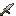
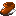
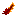
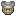

Accessories are wearable items that can provide stat boosts and/or special abilities. Accessories must be placed in a character's equip accessory slots to work, with the exception of some informational accessories which work simply by being in a character's inventory
Accessory UI Button
Accessory UI Button Hovered
| Icon | Name | Usage |
|---|---|---|
| Band of Restoration | Heal 1 health per 5 seconds | |
| Book of Knowledge | Increase by 20% Exp gain | |
|  | Broken Hero Sword | Increase Attack Damage and Attack Speed by 10% |
| Broken Shulker Shell | Gain Immunity in Levitation | |
| Crown | Immune Piglin madness (Unless got provoked) | |
| Curse Apple | Gain Immunity to Poison | |
| Dragon Claw | Gain 10% Attack Speed and Mining Speed | |
| Dragon Eye | Grant Night Vision, [Sneaking] reveal entities within 16x16 | |
| Dragon Heart | Gain 50% Damage Reduction on Fire Breath | |
| Dragon Scale | Immune to lethal damage (Cooldown: 10 minutes) | |
| Ender Chest Bag | Gain access to ender chest | |
| Fortune Shikigami | +2 Luck | |
| Heavy String Bow | Arrow damage increase by 8% | |
|  | Hermit's Boots | Allow double jump, reduce fall damage by 10% |
| Hero Shield | Gain 20% Damage Reduction when health drop at 30% | |
| Horse Shoe | Immune to fall damage | |
| Light String Bow | Increase bow pull | |
| Miner Gloves | +10% Mining Speed | |
| Obsidian Plate | Grant immunity to the Burning and Contact burning | |
| Obsidian Sigil | Immune in fire block, Reduce damage by 10% | |
| Power Claw | Increase Melee Damage by 10% | |
|  | Rectrix | +5% Attack Speed |
| Sentinel Brass | +2 Armor | |
|  | Sentinel of Shield | +5 Defense and 10% Knockback Resistance |
| Shark Tooth | Gain 5% Armor Penetration | |
| Steel Sigil | +8% Damage Reduction | |
| Vitamins | Gain Immunity to Hunger Effect | |
| Void Bag | Voidl Bag is a portable storage item, work like ender chest storage |